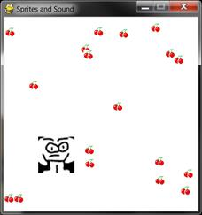

|
|
Chapter 19 |
Sounds and Images |
Topics Covered In This Chapter:
· Sound and Image Files
· Drawing Sprites
· The pygame.image.load() Function
· The pygame.mixer.Sound Data Type
· The pygame.mixer.music Module
In the last two chapters, we’ve learned how to make GUI programs that have graphics and can accept input from the keyboard and mouse. We’ve also learned how to draw different shapes. In this chapter, we will learn how to show pictures and images (called sprites) and play sounds and music in our games.
A sprite is a name for a single two-dimensional image that is used as part of the graphics on the screen. Figure 19-1 shows some example sprites.

Figure 19-1: Some examples of sprites.
Figure 19-2 shows being used in a complete scene.

Figure 19-2: An example of a complete scene, with sprites drawn on top of a background.
The sprite images are drawn on top of a background. Notice that you can flip the sprite image horizontally so that the sprites are facing the other way. You can draw the same sprite image multiple times on the same window. You can also resize the sprites to be larger or smaller than the original sprite image. The background image can be considered one large sprite.
The next program will demonstrate how to play sounds and draw sprites using Pygame.
Sprites are stored in image files on your computer. There are several different image formats that Pygame can use. You can tell what format an image file uses by looking at the end of the file name (after the last period). This is called the file extension. For example, the file player.png is in the PNG format. The image formats Pygame supports include BMP, PNG, JPG, and GIF.
You can download images from your web browser. On most web browsers, you have to right-click on the image in the web page and select Save from the menu that appears. Remember where on the hard drive you saved the image file. Copy this downloaded image file into the same folder as your Python program’s .py file. You can also create your own images with a drawing program like MS Paint or Tux Paint.
The sound file formats that Pygame supports are MID, WAV, and MP3. You can download sound effects from the Internet just like image files. They must be in one of these three formats. If your computer has a microphone, you can also record sounds and make your own WAV files to use in your games.
This program is the same as the Keyboard and Mouse Input program from the last chapter. However, in this program we will use sprites instead of plain looking squares. We will use a sprite of a little person instead of the white player square, and a sprite of cherries instead of the green food squares. We also play background music and a sound effect when the player sprite eats one of the cherry sprites.
If you know how to use graphics software such as Photoshop or MS Paint, you can draw your own images. If you don’t know how to use these programs, you can download graphics from websites and use those image files instead. The same applies for music and sound files. You can also find images on websites or images from a digital camera. You can download the image and sound files from this book’s website at http://invpy.com/downloads.
If you get errors after typing this code in, compare the code you typed to the book’s code with the online diff tool at http://invpy.com/diff/spritesAndSounds.
spritesAndSounds.py
1. import pygame, sys, time, random
2. from pygame.locals import *
3.
4. # set up pygame
5. pygame.init()
6. mainClock = pygame.time.Clock()
7.
8. # set up the window
9. WINDOWWIDTH = 400
10. WINDOWHEIGHT = 400
11. windowSurface = pygame.display.set_mode((WINDOWWIDTH, WINDOWHEIGHT), 0, 32)
12. pygame.display.set_caption('Sprites and Sound')
13.
14. # set up the colors
15. BLACK = (0, 0, 0)
16.
17. # set up the block data structure
18. player = pygame.Rect(300, 100, 40, 40)
19. playerImage = pygame.image.load('player.png')
20. playerStretchedImage = pygame.transform.scale(playerImage, (40, 40))
21. foodImage = pygame.image.load('cherry.png')
22. foods = []
23. for i in range(20):
24. foods.append(pygame.Rect(random.randint(0, WINDOWWIDTH - 20), random.randint(0, WINDOWHEIGHT - 20), 20, 20))
25.
26. foodCounter = 0
27. NEWFOOD = 40
28.
29. # set up keyboard variables
30. moveLeft = False
31. moveRight = False
32. moveUp = False
33. moveDown = False
34.
35. MOVESPEED = 6
36.
37. # set up music
38. pickUpSound = pygame.mixer.Sound('pickup.wav')
39. pygame.mixer.music.load('background.mid')
40. pygame.mixer.music.play(-1, 0.0)
41. musicPlaying = True
42.
43. # run the game loop
44. while True:
45. # check for the QUIT event
46. for event in pygame.event.get():
47. if event.type == QUIT:
48. pygame.quit()
49. sys.exit()
50. if event.type == KEYDOWN:
51. # change the keyboard variables
52. if event.key == K_LEFT or event.key == ord('a'):
53. moveRight = False
54. moveLeft = True
55. if event.key == K_RIGHT or event.key == ord('d'):
56. moveLeft = False
57. moveRight = True
58. if event.key == K_UP or event.key == ord('w'):
59. moveDown = False
60. moveUp = True
61. if event.key == K_DOWN or event.key == ord('s'):
62. moveUp = False
63. moveDown = True
64. if event.type == KEYUP:
65. if event.key == K_ESCAPE:
66. pygame.quit()
67. sys.exit()
68. if event.key == K_LEFT or event.key == ord('a'):
69. moveLeft = False
70. if event.key == K_RIGHT or event.key == ord('d'):
71. moveRight = False
72. if event.key == K_UP or event.key == ord('w'):
73. moveUp = False
74. if event.key == K_DOWN or event.key == ord('s'):
75. moveDown = False
76. if event.key == ord('x'):
77. player.top = random.randint(0, WINDOWHEIGHT - player.height)
78. player.left = random.randint(0, WINDOWWIDTH - player.width)
79. if event.key == ord('m'):
80. if musicPlaying:
81. pygame.mixer.music.stop()
82. else:
83. pygame.mixer.music.play(-1, 0.0)
84. musicPlaying = not musicPlaying
85.
86. if event.type == MOUSEBUTTONUP:
87. foods.append(pygame.Rect(event.pos[0] - 10, event.pos[1] - 10, 20, 20))
88.
89. foodCounter += 1
90. if foodCounter >= NEWFOOD:
91. # add new food
92. foodCounter = 0
93. foods.append(pygame.Rect(random.randint(0, WINDOWWIDTH - 20), random.randint(0, WINDOWHEIGHT - 20), 20, 20))
94.
95. # draw the black background onto the surface
96. windowSurface.fill(BLACK)
97.
98. # move the player
99. if moveDown and player.bottom < WINDOWHEIGHT:
100. player.top += MOVESPEED
101. if moveUp and player.top > 0:
102. player.top -= MOVESPEED
103. if moveLeft and player.left > 0:
104. player.left -= MOVESPEED
105. if moveRight and player.right < WINDOWWIDTH:
106. player.right += MOVESPEED
107.
108.
109. # draw the block onto the surface
110. windowSurface.blit(playerStretchedImage, player)
111.
112. # check if the block has intersected with any food squares.
113. for food in foods[:]:
114. if player.colliderect(food):
115. foods.remove(food)
116. player = pygame.Rect(player.left, player.top, player.width + 2, player.height + 2)
117. playerStretchedImage = pygame.transform.scale(playerImage, (player.width, player.height))
118. if musicPlaying:
119. pickUpSound.play()
120.
121. # draw the food
122. for food in foods:
123. windowSurface.blit(foodImage, food)
124.
125. # draw the window onto the screen
126. pygame.display.update()
127. mainClock.tick(40)

Figure 19-3: An altered screenshot of the Sprites and Sounds game.
Setting Up the Window and the Data Structure
Most of the code in this program is the same as the Collision Detection program in the previous chapter. We’ll focus only on the parts that add sprites and sound.
12. pygame.display.set_caption('Sprites and Sound')
First, let’s set the caption of the title bar to a string that describes this program on line 12. Pass the string 'Sprites and Sound' to the pygame.display.set_caption() function.
17. # set up the block data structure
18. player = pygame.Rect(300, 100, 40, 40)
19. playerImage = pygame.image.load('player.png')
20. playerStretchedImage = pygame.transform.scale(playerImage, (40, 40))
21. foodImage = pygame.image.load('cherry.png')
We are going to use three different variables to represent the player, unlike the previous programs that just used one.
The player variable on line 18 will store a Rect object that keeps track of where and how big the player is. The player variable doesn’t contain the player’s image, only the player’s size and location. At the beginning of the program, the top left corner of the player is located at (300, 100) and the player will have a height and width of 40 pixels to start.
The second variable on line 19 that represents the player is playerImage. The pygame.image.load() function is passed a string of the filename of the image to load. The return value is a Surface object that has the graphics in the image file drawn on its surface. We store this Surface object inside of playerImage.
The third variable is explained in the next section.
On line 20, we will use a new function in the pygame.transform module. The pygame.transform.scale() function can shrink or enlarge a sprite. The first argument is a pygame.Surface object with the image drawn on it. The second argument is a tuple for the new width and height of the image in the first argument. The pygame.transform.scale() function returns a pygame.Surface object with the image drawn at a new size. We will store the original image in the playerImage variable but the stretched image in the playerStretchedImage variable.
On line 21, we call pygame.image.load() again to create a Surface object with the cherry image drawn on it. Be sure you have the player.png and cherry.png files in the same directory as the spritesAndSounds.py file, otherwise Pygame won’t be able to find them and will give an error.
Setting Up the Music and Sounds
37. # set up music
38. pickUpSound = pygame.mixer.Sound('pickup.wav')
39. pygame.mixer.music.load('background.mid')
40. pygame.mixer.music.play(-1, 0.0)
41. musicPlaying = True
Next you need to load the sound files. There are two modules for sound in Pygame. The pygame.mixer module can play short sound effects during the game. The pygame.mixer.music module can play background music.
Call the pygame.mixer.Sound() constructor function to create a pygame.mixer.Sound object (called a Sound object for short). This object has a play() method that when called will play the sound effect when called.
Line 39 calls pygame.mixer.music.load() to load the background music. Line 40 calls pygame.mixer.music.play() to start playing the background music. The first parameter tells Pygame how many times to play the background music after the first time we play it. So passing 5 will cause Pygame to play the background music 6 times. -1 is a special value, and passing it for the first parameter makes the background music repeat forever.
The second parameter to pygame.mixer.music.play() is the point in the sound file to start playing. Passing 0.0 will play the background music starting from the beginning. Passing 2.5 for the second parameter will start the background music two and half seconds from the beginning.
Finally, the musicPlaying variable will have a Boolean value that tells the program if it should play the background music and sound effects or not. It’s nice to give the player the option to run the program without the sound playing.
Toggling the Sound On and Off
79. if event.key == ord('m'):
80. if musicPlaying:
81. pygame.mixer.music.stop()
82. else:
83. pygame.mixer.music.play(-1, 0.0)
84. musicPlaying = not musicPlaying
The M key will turn the background music on or off. If musicPlaying is set to True, then the background music is currently playing and we should stop the music by calling pygame.mixer.music.stop(). If musicPlaying is set to False, then the background music isn’t currently playing and should be started by calling pygame.mixer.music.play().
Finally, no matter what, we want to toggle the value in musicPlaying. Toggling a Boolean value means to set to the opposite of its current value. The line musicPlaying = not musicPlaying sets the variable to False if it is currently True or sets it to True if it is currently False. Think of toggling as what happens when you flip a light switch on or off: toggling the light switch sets it to the opposite setting.
Drawing the Player on the Window
109. # draw the block onto the surface
110. windowSurface.blit(playerStretchedImage, player)
Remember that the value stored in playerStretchedImage is a Surface object. Line 110 draws the sprite of the player onto the window’s Surface object (which is stored in windowSurface).
The second parameter to the blit() method is a Rect object that specifies where on the Surface object the sprite should be blitted. The Rect object stored in player is what keeps track of the position of the player in the window.
Checking if the Player Has Collided with Cherries
114. if player.colliderect(food):
115. foods.remove(food)
116. player = pygame.Rect(player.left, player.top, player.width + 2, player.height + 2)
117. playerStretchedImage = pygame.transform.scale(playerImage, (player.width, player.height))
118. if musicPlaying:
119. pickUpSound.play()
This code is similar to the code in the previous programs. But there are a couple of new lines. Call the play() method on the Sound object stored in the pickUpSound variable. But only do this if musicPlaying is set to True (which means that the sound is turned on).
When the player eats one of the cherries, the size of the player increases by two pixels in height and width. On line 116, a new Rect object that is 2 pixels larger than the old Rect object will be the new value of player.
While the Rect object represents the position and size of the player, the image of the player is stored in a playerStretchedImage as a Surface object. Create a new stretched image by calling pygame.transform.scale(). Be sure to pass the original Surface object in playerImage and not playerStretchedImage.
Stretching an image often distorts it a little. If you keep restretching a stretched image over and over, the distortions add up quickly. But by stretching the original image to the new size, you only distort the image once. This is why you pass playerImage as the first argument for pygame.transform.scale().
Draw the Cherries on the Window
121. # draw the food
122. for food in foods:
123. windowSurface.blit(foodImage, food)
In the previous programs, you called the pygame.draw.rect() function to draw a green square for each Rect object stored in the foods list. However, in this program you want to draw the cherry sprites instead. Call the blit() method and pass the Surface object stored in foodImage. (This is the Surface object with the image of cherries drawn on it.)
The food variable (which contains each of the Rect objects in foods on each iteration through the for loop) tells the blit() method where to draw the foodImage.
Summary
This game has added images and sound to your games. The images (called sprites) look much better than the simple shape drawing used in the previous programs. The game presented in this chapter also has music playing in the background while also playing sound effects.
Sprites can be scaled (that is, stretched) to a larger or smaller size. This way we can display sprites at any size we want. This will come in handy in the game presented in the next chapter.
Now that we know how to create a window, display sprites and drawing primitives, collect keyboard and mouse input, play sounds, and implement collision detection, we are now ready to create a graphical game in Pygame. The next chapter brings all of these elements together for our most advanced game yet.